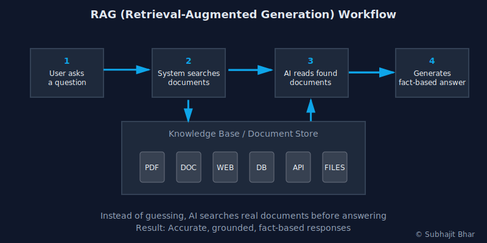

RAG for Knowledge-Intensive Tasks
Picture this: You're asking an AI about cancer treatments. It sounds super confident and gives you detailed answers. But here's the problem — it just made up a medical study that doesn't exist.
That's not just embarrassing. When we're talking about healthcare, finance, or legal advice, these AI "hallucinations" can be downright dangerous.
That's where RAG (Retrieval-Augmented Generation) comes in. Think of it as giving AI a fact-checker that actually works.
What You'll Learn¶
- What makes some AI tasks need "real" knowledge
- Why even smart AI models mess up
- How RAG works (no PhD required)
- A simple code example you can try
- When to use RAG (and when not to)
Ready? Let's dive in.
What Are Knowledge-Heavy AI Tasks?¶
Some AI tasks are like trivia questions, the answers are already "baked into" the AI's training.
But others need fresh, specific information that changes over time or lives in private documents.
Examples you've probably seen: * Customer service bots that need to know your company's policies * Legal AI that searches through case law * Medical AI that references the latest research * Financial bots that need real-time market data
These tasks can't just rely on what the AI learned during training. They need access to live, up-to-date information.
Why Smart AI Still Gets Things Wrong¶
Even the best AI models like GPT-4 have three big problems:
1. They make stuff up: When they don't know something, they often invent plausible-sounding answers instead of saying "I don't know."
2. They have memory limits: Most AI can't read through thousands of pages at once. They forget things from earlier in long conversations.
3. They don't know your private data: Out-of-the-box AI doesn't have access to your company docs, databases, or personal files.
The result? Confident answers that are completely wrong.
How RAG Fixes This¶
RAG is surprisingly simple. Instead of asking AI to remember everything, we give it a research assistant. Here's what happens:
- You ask a question
- The system searches relevant documents
- AI reads those documents and answers based on what it found
- You get a fact-based answer

It's like having an AI that can Google things before answering — except way more sophisticated.
RAG vs Regular AI: The Difference¶
| Regular AI | RAG-Powered AI |
|---|---|
| Uses only training data | Searches live documents |
| Often makes things up | Answers from real sources |
| Can't access your files | Works with your data |
| Expensive for long texts | More cost-effective |
See It In Action: Simple Code Example¶
Want to try RAG yourself? Here's a basic example using Python:
from langchain.chat_models import ChatOpenAI
from langchain.vectorstores import FAISS
from langchain.embeddings import OpenAIEmbeddings
from langchain.chains import RetrievalQA
# Connect to your document database
retriever = FAISS.load_local("my_documents", OpenAIEmbeddings())
# Set up the AI model
llm = ChatOpenAI()
# Create the RAG system
qa_system = RetrievalQA(llm=llm, retriever=retriever)
# Ask a question
answer = qa_system.run("What's our return policy?")
print(answer)
This code creates an AI that can search through your documents before answering questions.
Pretty cool, right?
When RAG Might Be Overkill¶
RAG isn't always the answer. Skip it if you're doing:
- Simple text classification (like spam detection)
- Creative writing or brainstorming
- Tasks where the AI already knows enough
- Projects with very little data to search through
💡 Pro Tip: Sometimes the simplest solution is the best one.
Should You Use RAG?¶
RAG is perfect if you're building:
- Company chatbots that need to know policies and procedures
- Research assistants that search through technical documents
- Customer support that references product manuals
- Legal tools that find relevant case law
Think of RAG as giving your AI both intelligence and access to information. That's a powerful combination.
Ready to Get Started?¶
Here's your next steps:
- Pick a real problem — maybe your team's internal wiki or product docs
- Upload your documents to a vector database (FAISS is a good start)
- Connect it to an AI model using tools like LangChain
- Test it out with real questions
The future isn't just about smarter AI — it's about AI that can actually find and use the right information.
Start small, think big, and build something useful.
Need Help Building Your RAG System?¶
Building a production-ready RAG system involves more than just connecting a few APIs. You need proper document preprocessing, vector database optimization, retrieval tuning, and seamless integration with your existing systems.
I help companies like yours:
- Design and implement custom RAG architectures
- Optimize retrieval performance for your specific use case
- Integrate RAG systems with existing workflows
- Scale AI solutions from prototype to production
RAG is a powerful technique for building internal knowledge assistants, enhancing customer support, or creating domain-specific AI tools. Understanding these fundamentals will help you navigate the technical complexities and deliver results that work in production.
Stay Updated¶
Join my newsletter for the latest insights on Document AI, RAG, and LLM technologies: